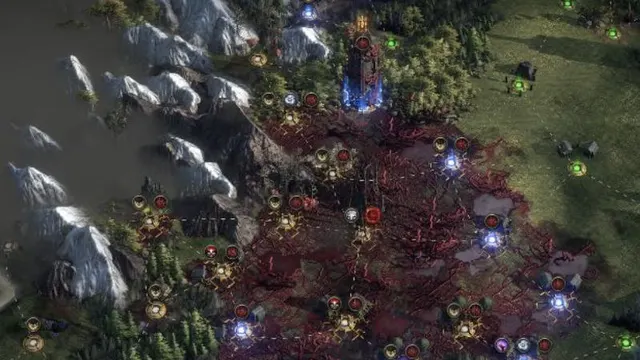
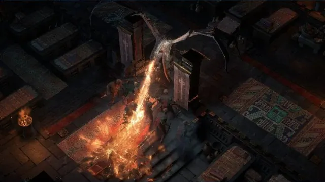

Path of Exile 2 crafting recipes, flowcharts and a crafting emulator
A Path of Exile 2 crafting service built together with its players. The more recipes, reverse crafts and reports accumulate, the more precise the odds and crafting orders become.
Reviews, requests and bug reports decide what gets built next. The experience of players who actually craft is the standard.

Every new recipe, reverse craft and correction refines the odds, costs and step order together.
Odds come from the game's modifier weights and tens of thousands of simulated runs. Weights that aren't public are marked as unknown.

Based on real crafting videos and posts, split into high-end, balanced and essential grades to offer a path for every budget.
If a recipe behaved differently in game, or there is an item or feature you need, tell us. Reports are reviewed and reflected in the next update.
Messages are not published and are read by the operator only. Your email is used only to reply.